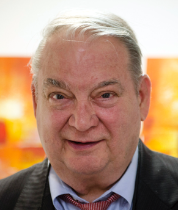

南京联合创新科学研究所
NanJing United Innovative Scientific Research Institute
- Sitemap |
- Contact us |
- 中文
search
Expert introduction
- Ferid Murad
- George Fitzgerald Smoot III
- Erwin Neher
- Dan Shechtman
Ferid Murad
Ferid Murad
Freddie Murad, an Albanian-American doctor and pharmacologist. Obtained 1998 Nobel Prize in Physiology or Medicine, honorary member of Kosovo Academy of Science and Arts. Foreign academician of the Chinese Academy of Sciences.


南京联合创新科学研究所
NanJing United Innovative Scientific Research Institute
网站备案号：苏ICP备17036492号-1
地址：南京市江宁区南佑路7号千人专家大厦4016联系电话：025-5271 7672邮箱地址：hr.operation@divemath.com